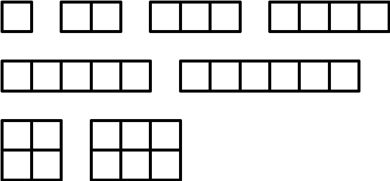

Byteman has a collection of N squares with side 1. How many different rectangles can he form using these squares?
Two rectangles are considered different if none of them can be rotated and moved to obtain the second one. During rectangle construction, Byteman can neither deform the squares nor put any squares upon any other ones.
The first and only line of the standard input contains one integer N (1 <= N <= 10000).
The first and only line of the standard output should contain a single integer equal to the number of different rectangles that Byteman can form using his squares.
For the input data:
6
the correct result is:
8

Task author: Jakub Radoszewski.